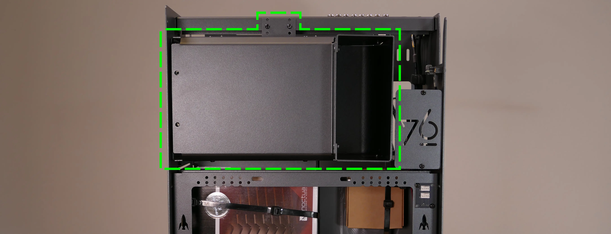
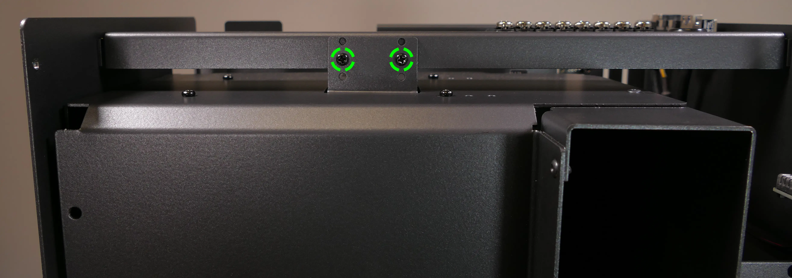

nebula36 (Parts & Assembly)
The nebula36 chassis is ready to be outfitted with standard personal computer components. If the system has already been built, ensure the system is powered off and all cables are unplugged from the motherboard, PCIe cards, power supply, and front I/O before opening the chassis.
The preinstalled velcro strips are left partially unwrapped to aid in removal. When building the system, you can optionally wrap the velcro up the rest of the way.
- Replacing the front accent strip
- Removing the top case
- Removing the GPU brace
- Removing the CPU shroud
- Unpacking the included accessories
- Installing the motherboard
- Installing the CPU shroud fans
- Installing the GPU
- Installing the SATA backplane
- Installing 2.5" drives
- Replacing the bottom case fan
- Installing side intake fans
- Installing the power supply
- Wiring the front I/O and power button
Replacing the front accent strip:
nebula36 includes a customizable accent panel on the front of the case, which can be swapped to change the case's look and feel. The instructions for swapping the accent are also available in video form.
- Tools required: None
Steps to replace the front accent strip:
- Place the nebula36 on the edge of the desk so the front side is hanging off of the desk.
- The nebula36 can alternatively be lifted or tilted so the front of the computer is hovering above the desk.
- Slide the accent strip down to unlock it.
- The accent can be gripped at the bottom edge.
- Pull the accent strip off of the case, starting with the bottom edge.
- Place the new accent strip onto the front of the case and slide it up to lock it into place.

Removing the top case:
The top case can be removed to access the internal components.
- Tools required: Cross-head (Phillips) screwdriver (optional)
Steps to remove the top case:
- Remove the four outer screws holding the top case onto the machine.

- Slide the top case up and off of the machine.
Removing the GPU brace:
The GPU brace provides a mounting point to help keep installed GPUs (or other PCI Express cards) in place while transporting the system. It can also be used to mount up to two extra intake fans (one, a BQ SIW4-12025-MF-PWM, is optional when purchasing the chassis; a second is not included.)

The fan splitter on the GPU brace is intended for fans mounted on the GPU brace, and should not be used for the CPU shroud fans or the bottom intake fan.
- Tools required: Cross-head (Phillips) screwdriver
Steps to remove the GPU brace:
- Follow the steps above to remove the top case.
- Unscrew the four screws holding the GPU brace in place (two on the front of the case, two on the back.)

- Pull the GPU brace out of the chassis.
Removing the CPU shroud:
The CPU shroud supports one or more of the CPU fans and guides airflow from the side of the case through the CPU radiator to the back exhaust vent. The CPU shroud is custom-designed to work with the Noctua NH-U12S CPU cooler, which is available as an optional add-on at the time of purchase.

- Tools required: Cross-head (Phillips) screwdriver
Steps to remove the CPU shroud:
- Follow the steps above to remove the top case.
- Unscrew the two side screws holding the CPU shroud onto the top crossbar.

- Unscrew the four back screws holding the CPU shroud onto the chassis.
- Hold onto the shroud while removing the final screw so it doesn't fall.

- Pull the CPU shroud out of the chassis.
- When replacing the CPU shroud, ensure all fan cables are plugged into one of the fan splitter boards in the top right of the chassis.
Unpacking the included accessories:
nebula36 includes the following components preinstalled:
- 1x
nebula_iopower button controller board - 1x
MYS7523top I/O board - 3x four-pin fan splitter boards
- 1x back CPU shroud fan
- Be Quiet! Silent Wings 4 140mm (
BQ SIW4-14025-LF-PWM)
- Be Quiet! Silent Wings 4 140mm (
- 1x Be Quiet!
- 7x short velcro straps
- 1x on the front of the chassis
- 3x on the side of the chassis
- 1x on the bottom of the chassis
- 1x on the CPU shroud
- 1x on the GPU brace
In addition, nebula36 ships with the following non-installed accessories:
- 1x Screw and velcro box
- 15x short velcro straps
- 1x long velcro strap
- 9x motherboard standoffs
- 9x M3 (motherboard) screws
- 4x fan screws
- 1x CPU cooler w/ fan (optional)
- Noctua
NH-U12Sw/NF-F12 PWMfan
- Noctua
- 1x GPU brace-mounted side fan (optional)
- Be Quiet! Silent Wings 4 120mm (
BQ SIW4-12025-MF-PWM)
- Be Quiet! Silent Wings 4 120mm (
Steps to unpack the included accessories:
- Follow the steps above to remove the top case, remove the GPU brace, and remove the CPU shroud.
- Cut the zip ties holding the accessory boxes in place.
- The image below highlights where the zip ties are joined; they can be cut anywhere, but must be cut between a joint and the chassis in order to be removed.

- Remove the accessory boxes from the chassis.
Installing the motherboard:
nebula36 supports the following standard motherboard sizes:
- ATX
- Mini-DTX
- DTX
- MicroATX
- Mini-ITX
Nine standoffs and motherboard screws are included.
- Tools required: Cross-head (Phillips) screwdriver
Steps to install the motherboard:
- If they are installed, remove the top case, remove the CPU shroud and remove the GPU brace.
- Locate the standoffs and M3 screws from the brown screw and velcro box.

-
Insert the standoffs into the appropriate holes for your motherboard size. The standoff screw holes are marked with shapes on the chassis, which correspond to the most common motherboard sizes:
- Mini-ITX and Mini-DTX: hexagon (4 standoffs)
- MicroATX: square (9 standoffs)
- ATX: triangle (9 standoffs)
The photo below also includes symbols for one additional motherboard size:
- DTX: star (6 standoffs)

- Install the motherboard's I/O shield onto the back of the chassis by pressing it into place from the inside.
- Place the motherboard into the chassis, aligning the motherboard's screw holes with the installed standoffs.
- Screw the motherboard into the standoffs using the M3 screws.
Installing the CPU shroud fans:
nebula36 ships with one 120mm fan (BQ SIW4-12025-MF-PWM) installed in the back of the CPU shroud. If you install a CPU cooler with its own fan, such as the optional Noctua NH-U12S cooler sold with nebula36 (which includes a Noctua NF-F12 PWM fan), then the CPU cooler's fan can be mounted in the front of the CPU shroud.
These instructions use the Noctua NH-U12S as an example.
- Tools required: Cross-head (Phillips) screwdriver
Steps to install the CPU cooler fan (front):
- Remove the top case and the CPU shroud.
- Remove the fan screws from the brown screw and velcro box.

- Remove the
NH-U12Sfrom the box.

- Remove the included
NF-F12fan from the cooler heatsink by pulling the metal tabs (highlighted green above) off of the heatsink and fan. - Install the cooler onto the motherboard/processor.
- Remove the front fan bracket from the CPU shroud by unscrewing the four screws (highlighted green below) and pulling it out of the CPU shroud.

- Place the spinning side of the fan down and the stationary cover up, then orient the fan so the wire points towards the bottom right.
- Place the fan bracket over the fan so the thinnest side is on the left.
- Screw in the four fan screws.
- It may take some force to thread the fan screws into the fan's plastic frame.

- Place the CPU shroud fan and bracket into the CPU shroud, with the thinnest side of the bracket pointed into the shroud.
- The spinning side of the fan should face the front of the chassis, while the stationary cover should face the back of the chassis.
- Replace the screws holding the fan bracket onto the CPU shroud.
- By default, the bracket is screwed as far back in the chassis (as farthest away from the L-shaped bend in the shroud) as possible.
Steps to replace the preinstalled CPU shroud fan (back):
- Remove the top case and the CPU shroud.
- Remove the back fan bracket from the CPU shroud by unscrewing the four screws (highlighted yellow below) and pulling it out of the CPU shroud.

- Unscrew the four fan screws holding the fan onto the bracket.

- When reinstalling the fan, the stationary cover should face the back of the chassis, and the wire should face the upper interior corner of the CPU shroud. The thinnest side of the bracket should face directly into the shroud.
- The wire can be run along the top of the fan until it meets the velcro strap.
Installing the GPU:
nebula36 supports GPUs up to 318.80mm long. For optimal cooling and ease of installation, GPUs longer than 308.80mm are not recommended.
These instructions also apply to other PCI Express cards, such as add-in sound cards or networking cards.
- Tools required: Cross-head (Phillips) screwdriver
Steps to install the GPU:
- If not already installed, install the motherboard.
- If the motherboard is already installed and the system is assembled, then remove the top case and remove the GPU brace.
- Unscrew the two screws holding the PCIe bracket onto the chassis, then remove the bracket.

- Remove a PCIe slot cover for each slot the new GPU will take up.
- Additional slot covers may fall off after removing the PCIe brakcet; hold them up when replacing the bracket.
- Install the GPU into the motherboard.
- Replace the PCIe bracket, which will hold the end of the GPU in place.
Installing the SATA backplane:
nebula36 is designed to work with an optional SATA backplane to allow for easy hot-swapping of 2.5" storage drives. The SATA backplane can be seen below.

- Tools required: Cross-head (Phillips) screwdriver
Steps to install the SATA backplane:
- Remove the top case.
- Unscrew and remove the 2.5" drive cage's cover.

- Unscrew and remove the 2.5" drive cage.

- If the SATA backplane's screw holes are covered by a translucent film, remove the film.
- Place the SATA backplane into the drive cage.
- The backplane should be oriented so the power plug will be at the top of the board after installing the drive cage back into the chassis.
- Screw the backplane into the drive cage from the outside.

- Screw the drive cage back onto the chassis.
- Connect the
POWER0header on the back of the SATA backplane to the power supply, and theDATA0andDATA1ports to two of the motherboard's SATA ports.- The
POWER0header uses a four-pin Berg connector, also known as a floppy drive power connector.
- The

- Install any 2.5" SATA drives and replace the drive cage cover, GPU brace (if necessary), and top case.
Installing 2.5" drives:
The drive cage can hold two 2.5" drives. Drives of 7.5mm, 9mm, or 15mm are supported. Airflow will decrease below recommended levels with drives larger than 15mm.
- Tools required: Cross-head (Phillips) screwdriver
Steps to install 2.5" drives:
- Remove the top case.
- Unscrew and remove the 2.5" drive cage's cover.
- Remove the plastic ring from the top crossbar and slide out four screws for each drive being installed.

- Insert two screws into each side of the 2.5" drive, then slide the drive into the drive cage, aligning the rubber mounts on the screws around the metal of the drive cage.
- The larger portion of the SATA connector (the power section) should be at the top, while the smaller portion (the data section) should be at the bottom.
- If the optional SATA backplane is not present, connect the SATA data and power cables from the back of the drive cage.
- A cutout in the chassis allows easy access to the back of the drive cage.
Replacing the bottom case fan:
The 140mm bottom case fan (BQ SIW4-14025-LF-PWM) is preinstalled, but can be replaced if it becomes defective. The fan can also be removed to clean its dust filter.
- Tools required: Cross-head (Phillips) screwdriver
Steps to replace the bottom case fan:
- Remove the top case.
- The side GPU brace can optionally be removed to make working with the fan easier.
- If the system is already assembled, unplug the fan from the fan splitter board or motherboard.
- Set the machine down on its side and unscrew the four fan screws.

- When reinstalling the fan, place the dust filter between the fan and the chassis with the shiny side facing the chassis.
Installing side intake fans:
nebula36 supports up to two 120mm side intake fans mounted to the GPU brace. One 120mm fan (BQ SIW4-12025-MF-PWM) is sold as an optional add-on at the time of purchase.
Steps to install the side intake fans:
- Remove the top case.
- Unpack the fan and rubber mounting pins from the fan box.
- The plastic rings included with the rubber mounting pins are not needed.

- Place the fan in the center of the GPU brace.
- The spinning side of the fan should face outward, while the stationary label should face inward.
- The preinstalled pinholes on the fan will line up with the long holes in the GPU brace.
- From the back (inside of the machine), insert the rubber mounting pins through the pinholes at each corner of the fan.
- The GPU brace can optionally be removed to make working with the rubber mounting pins easier.

- Plug the side fan into one of the headers on the GPU brace's fan splitter board. The nearby velcro strap can be used to hold the fan's cable.
Installing the power supply:
The system supports standard ATX power supplies. nebula36 includes a dust filter installed over the power supply's fan vent.
- Tools required: Cross-head (Phillips) screwdriver
Steps to install the power supply:
- Remove the top case.
- The side GPU brace can optionally be removed to make working with the power supply easier.
- Place the power supply into the chassis with the fan facing down.
- While holding the power supply against the back of the chassis, screw in the four power supply screws.
- Power supply screws are typically included with the power supply, and are not included with nebula36.

Steps to replace the power supply dust filter:
- Remove the top case and remove the power supply.
- Unscrew the four screws holding the dust filter onto the chassis.

- Remove, clean, and replace the dust filter.
Wiring the front I/O and power button:
nebula36 comes standard with two front daughterboards:
- The
nebula-io_2.2power button controller. - The
MYS7523 Rev. 2.0front I/O board.
The Nebula Io board can be used to power the system on when the top case is removed.
Both daughterboards can be removed and replaced if necessary. The external power button attached to the top case can also be replaced.
- Tools required: Cross-head (Phillips) screwdriver
Steps to wire the front I/O and power button:
- Remove the top case.
- Refer to the below diagram for powering the machine on or removing and replacing either daughterboard:
- The front I/O board screws are highlighted in green.
- The power button controller board screws are highlighted in red.
- The internal power button is highlighted in cyan.

- Refer to the below diagram for wiring the front I/O and power button (the CPU shroud and top crossbar have been removed for easier visibility):
- The USB Type-C port cable (highlighted green) connects to the motherboard's USB 3.1 header.
- The audio cable (highlighted yellow) connects to the motherboard's analog audio header.
- The USB Type-A port cable (highlighted cyan) connects to the motherboard's USB 3.0 header.
- The Nebula Io
PMB1header (highlighted red) connects to the motherboard's power button header. - The Nebula Io
PFP1header (highlighted pink) connects to the power button receptacle. - The power button receptacle header (highlighted orange) connects to the Nebula Io board.

Steps to replace the power button:
- Remove the top case.
- Follow the instructions in the Replace the Thelio Power Button support article.